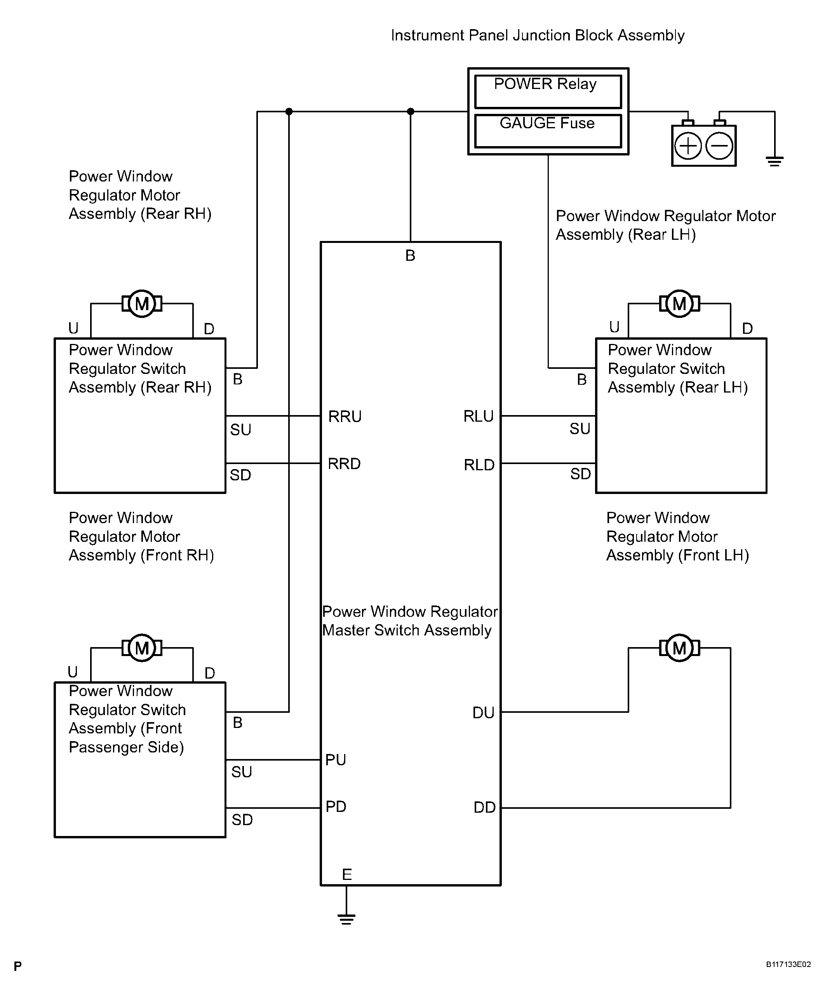
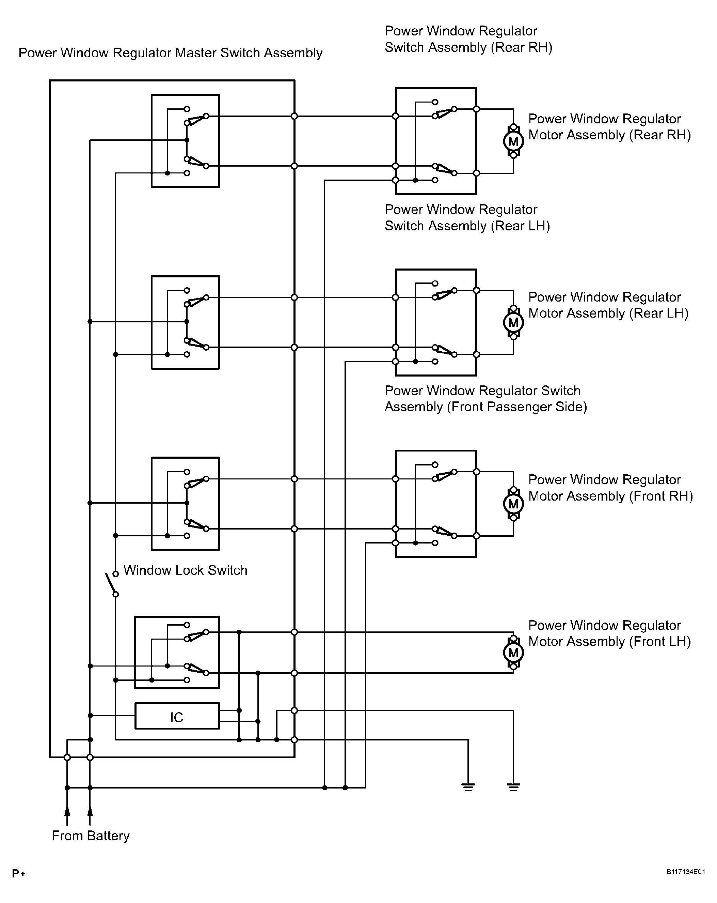

Home
>>
Scion
>>
2006
>>
xB Standard
>>
Repair and Diagnosis (Single Page)
>>
Body & Frame
>>
Windows
>>
Windshield/Window Glass
>>
Power Window Control System
>>
System Diagram
System Diagram
POWER WINDOW CONTROL SYSTEM DIAGRAM
Fig 1: Power Window Control System Diagram

Courtesy of © TOYOTA, LICENSE AGREEMENT TMS1002
POWER WINDOW SWITCH INNER CIRCUIT
Fig 2: Power Window Switch Inner Circuit Diagram

Courtesy of © TOYOTA, LICENSE AGREEMENT TMS1002